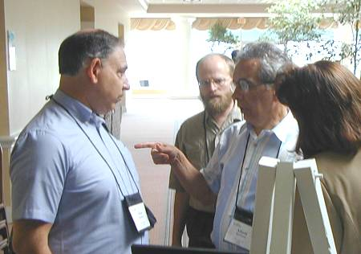
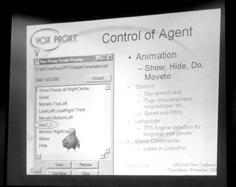
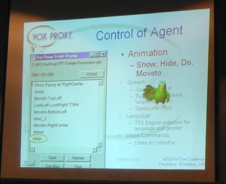
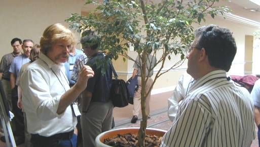

APL2000 (Orlando) Conference Report: APL 2000 User’s Meeting in Orlando
Vector 17:3, page 64
Introduction¶
This was quite possibly the best APL conference ever. The same was said of last year’s APL2000 gathering, and at the end of this one, Eric could be seen fretting over how they could possibly match it next year! I’m sure they will have a good try. The remarkable thing was that it was stuffed with interesting material, and almost none of it came directly from APL 2000 themselves. In fact (in a brilliant piece of stage-management) they kept the best until the very last – a low-key 10 minutes from Bill Rutiser on the future of the interpreter.

Eric Baelen with Adam Kertesz (who was honoured with the APL2000 award for Outstanding Professional and Technical Achievement)
The venue was the same as last year, but the Clarion Plaza had tried to fool us by renaming itself the Rosen Plaza in the meantime! Jonathan & I were forewarned and skipped off down the road to the Howard-Johnson ‘motel and suites’ which was about half the room price for a very much pleasanter environment. We even had a microwave so we could make real tea, and the 15-minute walk up International Drive was surprisingly enjoyable.
Having said this, the actual conference facilities were fine at the Clarion/Rosen and the buffet meals and banquet were up to the same high standard as last year.
The Social Programme¶
The two pictures below probably give you a flavour of the evening outing to WonderWorks. Kate Cannon is mastering the JetSki while father Ray has a little local difficulty with an airblast.
eXtreme APL at the WonderWorks evening
The Formal Sessions¶
These were almost all for the users, by the users. The atmosphere was positive “Hey guys, look what we did with APL ...” but realistic “ ... but it took us 3 months to get to where we are today when we guessed 3 weeks”. There was also some solid training material from the APL2000 regulars, and a genuine ‘newbies’ day which generated some mixed responses, but at least one convert to the cause. Vector is intending to publish several of the more formal papers in full, so I will keep my notes to the plenary sessions with a few stray comments on the others.
Greg on KREG¶
KREG is a leading vendor of Healthcare Decision-support tools, and Greg Ferguson had brought along 3 of his development team to enjoy the conference. He gave a fascinating, and to a European quite frightening, talk on the application of decision-support tools in the US healthcare industry. Those of us lucky enough to have a state-funded hospital system should realise how fortunate we are, and breath a huge sigh of relief that the last Tory administration did not have the time to send it any further down the path to privatisation.
KREG is a tool that is primarily sold by word of mouth “we have never taken the wine and dine approach to marketing” and they reckon that an installation in a large hospital will often return $1M per year to the customer. Greg noted that hospital information systems are extremely poor – people will come into a room and argue about how many patients were treated yesterday – “2 out of 3 hospitals cannot tell you what it costs to treat a patient”.
Greg gave as an example a hospital which ran its delivery room as a ‘loss leader’ in the mistaken belief that the mothers (or children) would remember the experience and return to the same hospital for treatment later in life. Careful examination of the data showed that this simply did not happen, so they closed it, which was “kind of tough for a Catholic hospital”.
The KREG system is based on a 10 year investment in APL code and the primary algorithm has not been touched in that time – “it takes 3 days to work out what the code is doing”. When they were facing the Windows conversion issue they looked at Dyadic, but (in common with many big systems) they could not read and write the STSC files reliably, so they looked at what SoftMed had done and decided to stay with APL2000 and its (at that time) rather limited Windows functionality. The conversion was begun in spring 1996, and proceeded one module at a time, leaving the data completely alone. It was necessary to overcome the resistance of the Sales and Marketing people (who did not see the need to charge for the update) and of the programmers (who found it hard to accept the need to change from the DOS way of working). In the end there was very little re-use of old interface code “we didn’t want to slap a Gui on a DOS system – those look kinda dumb”.
Brian Chizever – 101 new tricks to play with the interface¶
I really can’t add much to Brian’s published material here, except to say that a lot of the ‘fun’ stuff still only works under Windows 2000 so is of academic interest only for a few years yet. Watch the APL2000 website for developments and updates.
Patrick Parks – a new notation for activeX array properties¶
As Patrick put it “This stuff is newly hatched and a little unstable right now ...”. The ultimate goal is to make it much more possible to take VB documentation and paste it more or less directly into an APL function as a way of manipulating objects, so workbooks.count replaces some funny deeply parenthesised stuff involving ⎕WI and suddenly we can see our code again. Hopefully we will also see a rapid convergence of APL+Win and Dyalog APL, as they are both heading for the same (VB compatible) goal here.
Patrick did promise Vector that just as soon as the model stabilises, he will send us a full write-up of the new syntax, and from what we saw in his session it is not too far away. Of course this only solves half of the problem – it allows us to access the outside world from APL – the other half is to make it equally easy for the outside world to access APL. This was the bit that Bill Rutiser left until last!
Rich Krafchin and Barbara on Anemotion¶
This is a hard paper to write up – here is a bunch of APL enthusiasts with a real flair for marketing doing something that is technologically rather clever, possibly very dangerous, and potentially anti-social. OK, if they don’t do it, someone else will, but this is not an argument I can feel comfortable with!
What they have realised is that Microsoft have buried the entire HTML engine (complete with images, sounds and scripting) in that innocent little window we all thought was just an email viewer. This allows you to send emails with a touch of formatting (probably the original intention) but also to include links to pictures and sound clips. The clever bit is that the pictures and sounds can be included in the message as in-line attachments (this is called multi-part MIME) and that the HTML can include JScript or VBScript sections to make the pictures move around and the sounds play at appropriate times.
What the user receives is a single mail message which looks remarkably innocent until you open it (OK, it does have a paperclip, but that is all the warning you get). On being double-clicked it will do pretty well anything you can imagine that involves moving images and other multi-media effects. With careful use of GIF files and timers you can cook up some remarkably snazzy marketing presentations which can be assembled and bulk-emailed to the unsuspecting world. To quote the presenter “This is the most extraordinarily powerful marketing tool that we are now selling to our clients ...”
As with any development, the idea came quickly, the technical discussion went “How long? ... 2-3 weeks .... this is terrific!” Then they learned how a developer (even the APL kind) reckons time. The demo they showed gave us some idea why it had taken them a good part of the year to get from concept to product – the editor for the “Anemotion developer” owes a lot to Macromedia Flash, with timelines and previews and so on. This is just plain hard Gui stuff, whether in APL or any other language.
So why am I worried? Firstly I am bothered by their view that 300K is an acceptable size for something that will go out as bulk email. With the old-style WinCIM interface to Compuserve I can discard junk mails without ever downloading them; with Outlook and a POP3 mail server I just hit Send+Receive and watch the phone bill clock up. 300K at peak rate costs me rather more than 20p and it will very likely get in the way of some other mails that I actually want to read. If this idea really takes off, it could swamp a lot of mail servers and really get up the noses of us poor country boys with slow modems.
The second concern is that I wonder just how easy it would be to receive one of their mails, patch a virus into it, and send it on its way. It would still appear to come from the original source, it would still play its merry tune and so on. If this did some severe damage, I wonder who would sue whom?
Finally, I wonder why they are using APL? Their software is simply an assembly tool for some graphics and scripts, co-ordinated with a timeline. I don’t see where the array-processing comes in, or any real added value from the analytical power of the interpreter. Plain old Gui applications might be better done in a plain old Gui tool like Delphi? If the only reason they used APL is because they are APLers, I am worried.
The Atkins Family on VoxProxy¶
Now this one was superficially similar, but very different in that it really did leverage APL, and that it was both harmless and useful. I thought it was the neatest idea I had seen for years!
This time the target environment is Microsoft PowerPoint, which is great for dumb presentations, but has totally missed out on scripting and animations. Add to this a selection of Microsoft Agents (remember Merlin and Robbie the Robot) with some suitable scripting and – Wow! The entire application runs from a DLL that PowerPoint recognises as an add-in (it shows up on the menubar) and “we’re dealing with PowerPoint users here” it must major on ease of use and have excellent defaults. Where is the APL power in this one? Simply that they are using the interpreter directly to run scripts – control structures and all – which are trivially massaged then ⎕FXed, wrapped around with some interrupt checking and executed. Temporary variables can be assigned (for example &fluff is mapped to ⍙fluff before execution) and of course macros are just scripts which run other scripts.
Now Tom played his master-stroke – he handed over the entire presentation to Peedy (a very friendly green parrot) who was controlled by a VoxProxy script, which itself illustrated all the capabilities of the scripting tool!

I hope you can see enough of the script (and the parrot) to get a flavour of what was going on. Here is the same frame but just after Peedy had executed the ‘Wave’ command in the script ....

This just gives a small flavour of the power of the idea – agents can request input from the user (possibly even with limited voice recognition) so a collection of such scripts can make a really nice multi-media teaching tool, with multiple-choice questions and selection of material depending on the student’s performance.
I suppose I must be one of the few APLers in the world who gave up PowerPoint a long time ago (I think the last time I used it was in 1993), but this almost makes me want to take it up again.
VoxProxy should be available in January 2001, and the guide price was $200. What’s more they really seem to have the business model sorted – keep it low-profile, use targeted marketing where available (the PowerPoint User’s magazine), sell it off the website, stay small, get rich slowly and in a sensible controlled way. Every home should have one – see www.voxproxy.com and buy while stocks last!
Andy Weiss on zero-footprint Blackjack¶
It’s amazing what you can do in a training exercise! Andy is actually studying stage lighting at college, but his (APL-oriented) father suggested he might like to try computing for a while, so he signed up with APL2000 for some web-development work and this is what came out of it.
He started with the advantage of knowing almost nothing about Windows programming, so he just used the capabilities of the browser (and I suppose an inherited understanding of how timesharing works) to make a very effective multi-player BlackJack.
I think the crucial point on layout was to go with the ‘flow’ conventions that the browser expects – avoid all attempts at absolute positioning and things just re-organise themselves on the fly, particularly if you use tables sensibly. Any transitions and simple configuration changes are handled entirely locally by the DHTML code, and he uses a timer to make regular round-trips to the server to check on what the other players in the game have done. This necessity to ‘poll’ back to the server is always regarded as one of the major limitations of HTML in building a genuine multi-user site, but Andy had simply lived with it and made something that appeared to work very well indeed. The confidence of youth, and all that!
Bill Rutiser on eXtreme APL¶
This time, I can’t resist quoting some classic Rutiser quotes:
“I want you to imagine the cartoon on the first slide”
“At least I’m destroying my wife’s computer”
“Is it relevant that I can’t see anything here ...”
“Do not make any decisions about eXtreme Programming based on this talk – read Kent’s book”
“No design discussion between programmers should last longer than 15 minutes without making an experiment”
“If you can’t fix it, don’t break it!”
Bill’s talk was effectively a review of a series of 3 books on “eXtreme Programming” which are apparently the talk of the programming community at the moment. I followed his recommendation and have read 2 of the 3 so far – they are excellent little books and express a lot of what APL developers always were famous for in the past. I think I should dust off the manuscript for “APL – a Design Handbook”, retitle it “eXtreme Programming with APL” and retire gracefully to my mansion in the hills! Seriously – I wrote most of this stuff in 1982 without realising that it was anything special. Maybe the ‘mainstream’ environments have finally caught up sufficiently close to APL that the same techniques are now generally applicable? Should we be worried or just smug?
Anyway, the author is Kent Beck and the York branch of Borders had all 3 on the shelves, so I’m sure you can find them. Start with “eXtreme Programming Explained” and look out for a decent review of all three in the next Vector.
David O’Neill on Stats in British Columbia¶
This was a very enjoyable and entertaining potted history of the demographics department in the province of British Columbia, where about 1/3 of the staff (around 30 people) do some APL in the production of demographic trends and classic GIS summaries.
“The Census data-extraction system – every time we had a census we re-wrote the system!”
My notes make sense to me, but it would be much better if David could find the time to write this up for publication himself, as it has a lot of valuable lessons for anyone trying to maintain an APL operation in the face of political ignorance and the march of technology.
The Closing Plenary¶
These get more like religious revival meetings every year! There is no doubt that the APL2000 community feels itself to be moving forward again, that the internet paradigm gets more like timesharing as every day goes by, and that APLers understand how to do timesharing! Suddenly you can build websites that do interesting analytical stuff, that run at a decent speed and where you can fix things when they break. Yes, there is a big learning curve for us all to climb, but the attendance at Fred Waid’s JavaScript day (see later) was a sign that a fair number of us old dogs are actually getting motivated to learn some of the new tricks.
The format was quite neatly stage-managed, with a warm-up from Eric followed by each developer giving a very brief presentation of what they are working on today, and what they intend to be in APL+Win Vn4. The Linux interpreter achieved a 6-space prompt and successfully executed ⍳12 to general acclaim. In fact we were all given a copy of this to take home – mine is currently taking up a very small part of the memory card in the digital camera!
The final talk was a 5-minute summary from Bill Rutiser on his work with the core of the interpreter. I did my best to get verbatim notes here, as this was probably the most important session of the entire conference:
“The APL interpreter that we’re using today we started writing in 1982. 1Mb memory, 20Mb Hard drive, 6 developers using terminals. Some of the assumptions built into the interpreter are no longer valid.
One of the things people have wanted is to run as an in-process server – the internal architecture is not suitable for that.
What I have been working on for the past year is a re-factoring of the interpreter so it can run as a COM server in IE. It’s like re-wiring a 20-year old office building. The former owner re-organised many times and what infrastructure we had got lost! I am slowly rebuilding the infrastructure and when I am done it will be a wonderful thing.
Currently I have APL/360 with nested arrays and text in /out as a COM object that can be used as an invisible engine.”
Question: “Will it become the mainline interpreter?”
“Not really known. I am putting code back into the mainline codebase as convenient. It’s to everybody’s advantage to combine them as soon as possible, and the main APL development machine could be based around this COM object.”
“Please don’t take this as an announcement!”
As an observer, my instinct is to trust Bill on this one, and I think he is being given the time and thinking space to get it right. We should end up with a seriously good array engine for the 21st century, which will not need another rewiring for a good many years, if ever.
Tutorial Day – Fred Waid on JavaScript¶
As you would expect, this drew a good crowd of serious developers. The message was simple – over the next 2 years Microsoft will have completed the remote User Interface so you can run the entire visible part of your application in the browser. They are getting there on time, this time around – IE5.5 is the crucial update for developers, and it has been quietly slipped out on cover disks to make sure enough of the users will already have it when the time comes.
Essentially there will be WinForms (which replace the current Windows API) and WebForms – you will need to code for both if you want to deploy the same application locally and remotely. The current support for ⎕WI is around 3000 lines of C code which will obviously need rewriting – and maybe there will be enforced changes in the APL code that calls it. Either way, you should focus on building a CALC engine and separate the Gui code into one or the other.
Q: “How close is JScript to JavaScript?” A: “They are the same thing – the only difference is a lawsuit!”
Java may already have run its course – Microsoft are shipping an old JVM with IE5.5 in an intentional move to stabilise it. The chance of getting a major Java project approved is now at the “snowball in hell” level.
Fred noted that Visual InterDev is just a very thin wrapper on DHTML, and that most of what you need is supplied with Andy Weiss’s BlackJack workspace, which could save you $100 if you don’t mind doing a little tidying up. However for the rest of the talk he used InterDev as the most convenient tool to show what was going on.

Fred in expository mode during a break
Some useful analogies helped to make the APL crowd at home. Scripts go in the <head> section and are your functions and global variables. When the browser has finished parsing the script, it runs the ‘onload’ event in the <body> section which is the same as your ⎕LX. Think of the semi-colon as a diamond, but if you use these at all you must use them everywhere! Localisation is by script, or you can have globals which are accessible to all scripts. Yes, there are nested arrays ...
var t1 = new Array() t1[0] = 's1' t1[100] = 5
But note that ⎕IO is set at zero, and that all those elements in the middle are nulls, which is a specific data type that you can test for. Unlike APL, the array length is automatically extended, and you also have to get used to many things we think of as functions as being intrinsic methods of the object:
Alert "length is " + t1.length length is 101
There is a huge repository of idioms on the internet – just try asking www.google.com a question like ‘JavaScript + "delete trailing blanks" ’ if you need a code fragment for your own project. Note that there are actually very few reserved words, because of the redefinition of functions as properties, so it is quite legal to say:
length = t1.length
The frustrating thing is that there is an immediate execution mode, but it is regarded as part of the debugger, so the only way to get to it is to make your code blow up! Shades of the APL habit of introducing lines of dominos as the quick and easy way to stop a function.
Fred talked briefly about the design issue of where you split the application between the client and the server – OK you put the engine in the server but where do you draw the line? Changing a text field to ALL CAPS on input clearly goes in the client (even 3270 did that) and probably numeric verification and other basic validation, but what about simple arithmetic? Do you work out your tax rates in the browser – how about the discount options which may depend on a prior purchase? Probably not! Would you run something like Excel solver in the browser – not on today’s hardware with interpretive JavaScript!
However there is one up-coming technology which makes a very significant difference here, it is called HTC and it is one of these little invisible changes which has slipped in with IE5.5.
Currently, when you submit a web form, the server must replace the entire form with new content when it returns it. OK, you can use frames, but in the future we will be able to have the server send back an HTC page which is an HMTL stream with no displayable components – what’s more the arrival of this is registered as an event in the currently loaded JavaScript which can extract values from it. Suddenly we can have a page which round-trips to the server in the background, and updates fields in the browser having transmitted only the minimum few bytes needed for this particular job. This actually pushes the ‘engine-room’ boundary some way back to the server – why code all this stuff about tax rates down into JavaScript (and have a substantial number of bytes of program code uploaded with the page) when we can make a trivial round-trip with a few dozen bytes and have it run in the server by the program we already have? If the rules change, we fix it in one place, and if we need to integrate it with our customer database (which should know which state/country the customer is coming from) we can do it all in one simple in-line operation!
The message is becoming clearer by the day, and the internet is getting to be much more like the mainframe of old, just substitute your ‘browser’ for the old 3270 terminal and ‘webforms’ for AP124 and things start to make sense again. Fred went on to show a lot more stuff with XML namespaces and COM objects used as embedded display components, but I will stop where my notes stop and leave him to continue the saga next year when the technology will have advanced one more notch and a decent fraction of the world population of browsers may actually be supporting this stuff for real.
A gratuitous commercial for the HoJo off International Drive